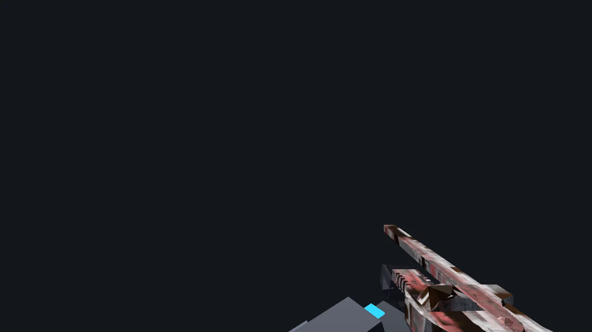

9-Weapon Tactical Arsenal & Viewmodel Kinematics
1. Arsenal Architecture & Rationale
The weapon system in Lab Engine combines competitive hitscan precision with tactile physical feedback. Rather than rendering a static gun model glued to the camera, the viewmodel is treated as an articulated physical object suspended on high-frequency spring-dampers. When the player rotates their view, sprints across ice, or unleashes automatic fire, the weapon reacts with realistic mass, momentum, and angular lag.
2. Complete 9-Weapon Ballistics Table
The table below details the full technical ballistics specification for all 9 weapons:
| ID | Weapon Name | Type | Damage | Fire Rate (RPM) | Magazine | Ballistic Model |
|---|---|---|---|---|---|---|
| 0 | Melee Pipe | Blunt Melee | 45 HP | 90 RPM | ∞ | Spherical Collision Sweep (1.6m) |
| 1 | Service Pistol | Sidearm | 24 HP | 300 RPM | 12 Rds | Instant Hitscan (Range 60m) |
| 2 | Pump Shotgun | Shotgun | 8 × 14 HP | 75 RPM | 8 Rds | 8-Pellet Spread Cone (0.045 rad) |
| 3 | M4A4-S Carbine | Assault Rifle | 32 HP | 660 RPM | 30 Rds | Hitscan with Sub-Frame Recoil |
| 4 | SG553 Scoped | Scoped Rifle | 38 HP | 545 RPM | 30 Rds | Pinpoint Accuracy + 1.8x Optical ADS |
| 5 | Rotary Minigun | Heavy Support | 18 HP | 920 RPM | 100 Rds | Suppressive Hitscan with Barrel Spin |
| 6 | Railgun | High-Energy | 150 HP | 40 RPM | 1 Rd | Piercing Beam with Light Trail |
| 7 | RPG-7 Launcher | Heavy Ordnance | 180 HP | 30 RPM | 1 Rocket | 3D Ballistic Rocket (Explosive Radius 6.5m) |
| 8 | Cryo-Gauntlets | Experimental | 15 HP + Freeze | 360 RPM | 50 Energy | Cryogenic Particle Beam (Slows Target 50%) |
3. Dual-Spring Damper Viewmodel Physics
Viewmodel inertia is simulated using two coupled second-order spring-damper differential equations (one for angular rotation lag, one for positional offset):
where \(\omega_n\) is the natural resonance frequency and \(\zeta\) is the damping ratio. This prevents robotic camera motion, ensuring the weapon drifts naturally behind fast mouse flicks and eases into target alignment without oscillation.
4. Tactical Walking Roll Sway & Bobbing
When the player is moving, WeaponAnimator::update calculates dynamic movement bobbing and roll sway:

// Tactical walking roll sway and sinusoidal bobbing
float walkFreq = 8.5f;
float walkCycle = _walkTimer * walkFreq;
float speedFactor = std::clamp(playerSpeed / 5.5f, 0.0f, 1.2f);
// Roll sway tilts weapon along lateral axis during strafes and footsteps
float rollSway = std::sin(walkCycle * 0.5f) * 1.45f * speedFactor; // ~1.45 deg roll
float pitchSway = std::cos(walkCycle) * 1.15f * speedFactor; // ~1.14 deg pitch
float yawSway = std::sin(walkCycle * 0.5f) * 0.85f * speedFactor;
// Positional figure-8 bobbing
Vec3 bobOffset(
std::cos(walkCycle * 0.5f) * 0.012f * speedFactor,
std::abs(std::sin(walkCycle)) * 0.015f * speedFactor,
std::sin(walkCycle) * 0.008f * speedFactor
);5. Iron-Sights ADS Alignment & Zoom
Holding Right-Mouse Button smoothly transitions the weapon from hip-fire into Aim-Down-Sights (ADS). The viewmodel offset interpolates towards the exact sightline position calibrated in LabStudio:
// Smooth exponential lerp towards calibrated ADS sightline
float adsTarget = isAiming ? 1.0f : 0.0f;
_adsProgress = Math::lerp(_adsProgress, adsTarget, 1.0f - std::exp(-18.0f * dt));
Vec3 currentOffset = Math::lerp(hipOffset, gripConfig.adsOffset, _adsProgress);
float currentFov = Math::lerp(baseFov, gripConfig.adsFov, _adsProgress);6. Universal STL 3D Mesh Ingestion
Lab Engine includes a high-performance native parser for 3D STL files (Mesh::loadSTL), reading both binary and ASCII formats.
Because CAD models often vary wildly in scale (e.g. exported in inches, centimeters, or millimeters), Mesh::loadSTL automatically computes the axis-aligned bounding box and calculates an optimal scale factor to normalize the mesh into viewmodel units:
float height = maxBounds.y - minBounds.y;
float targetHeight = 0.28f; // ~28cm tactical viewmodel profile
float autoScale = (height > 0.001f) ? (targetHeight / height) : 1.0f;7. PBR Skin Shading, Normalization & Textures
Through the universal STBI texture loader, weapon skins support both standard BMP files and lossless 2048×2048 PNG textures. Surface appearance is evaluated via a PBR shader combining:
- Albedo Map & Tint: Base diffuse texture modulated by artist-defined RGB tint.
- Metallic Slider: Drives specular reflection intensity for polished steel or titanium finishes.
- Roughness Slider: Modulates microfacet blur and environmental specular highlights.
- UV Tiling Scale: Real-time texture tiling adjustment for carbon fiber or hazard stripe materials.
See Also
- Lab Character & Weapon Studio ? Visual weapon grip calibration and skin editor.
- Combat Bot AI ? Third-person bot weapon sockets and exact weapon drops.
- 3D Audio & Synthesizer ? Procedural gunfire sound synthesis.